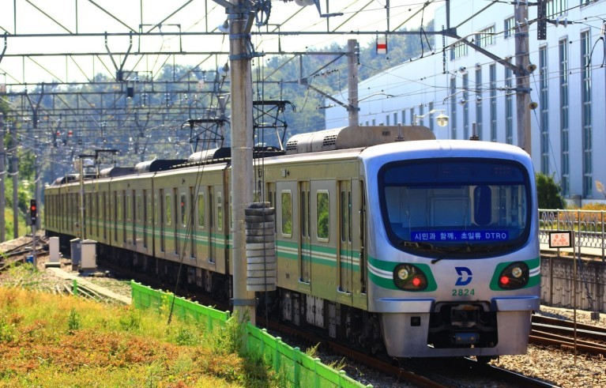
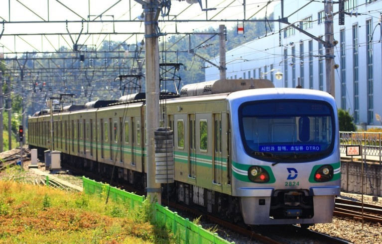
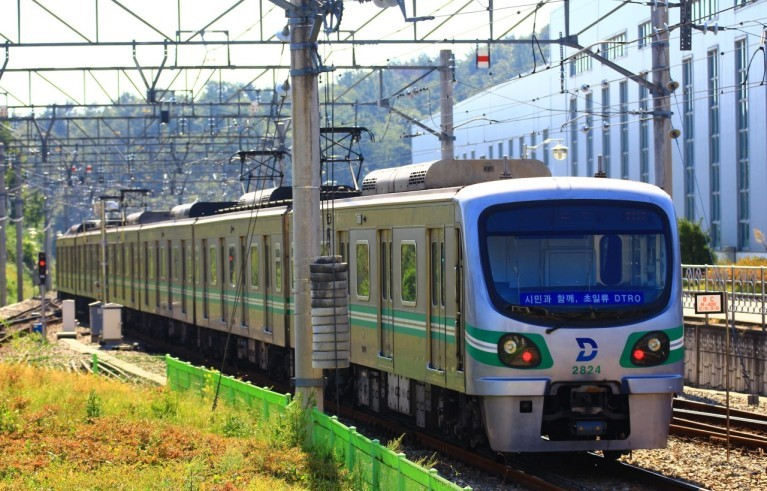
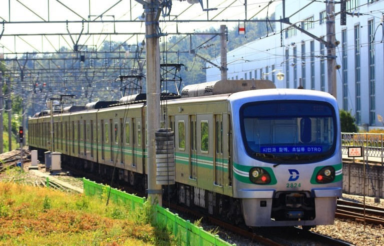

 

2003년 2월 18일, 대구 지하철 1호선 중앙로역에서 발생한 방화 사건.
대한민국에서 철도 관련으로 가장 많은 인명 피해를 기록한 사고로, 192명이 사망했다.
9시 30분: 방화범 김대한이 방화를 목적으로 인근 주유소에 방문하여 휘발유 7500원어치 상당을 구입한 뒤 1호선 송현역 안심방면 승강장에서 안심행 1079열차에 탑승했다.
9시 52분 32초: 안심행 1079열차가 중앙로역에 도착하였다.
9시 53분: 김대한이 열차가 중앙로역에 진입하는 순간 휘발유에 라이터로 불을 붙였다.
그리고 자신의 옷에 불이 붙자 놀란 김대한은 휘발유 통을 전동차의 바닥에 던졌고 수 초만에 전동차가 불길에 휩싸였다.
그 불에서 나온 검은 연기, 유독성 가스가 승강장과 지하 1~2층 대합실에 급속히 확산됐고, 승객들이 주출입구 쪽의 계단을 통해 대피하기 시작하였다.
1079열차 기관사는 소화기로 초기 화재 진압을 시도하였으나 실패하고 화재발생 사실을 종합사령실에 보고하지 않은채 대피했다.
종합사령실 기계설비사령 주컴퓨터에 중앙로역 화재경보 문구가 뜨고 경보음이 울렸으나, 종합사령실에서는 확인하지 못하였다.
9시 53분 35초 ~ 9시 54분 40초: 1079열차에 타고있던 40대 남성이 전동차 안에서 화재가 발생되었다는 내용을 최초로 대구소방안전본부 종합사령실에 신고하였고,
이후 역사 밖으로 탈출한 일부 승객들, 전동차 안에 갇힌 승객들과 휴대전화 통화를 한 가족 등이 현장의 상황을 소방본부 종합상황실에 신고하였으며, 소방본부 종합상황실에
서는 8개 소방 파출소에 출동명령을 내렸다.
이에 따라 삼덕소방파출소 등 중부소방서 및 북부소방서 휘하의 8개 소방대가 출동했다.
9시 55분 ~ 9시 55분 30초: 중앙로역 역무원이 종합사령실에 "중앙로역 실제 화재입니다. 전혀 앞이 분간이 안 됩니다. 신고 좀 부탁드립니다."라며 급히 보고했으나, 종합사령실
이119에 신고하지 않았다.
한편 1080열차가 대구역에서 중앙로역으로 출발하여 종합사령실에서 전체 열차에 "중앙로역 진입 시 조심하여 운전해 들어가시기 바랍니다. 지금 화재가 발생했습니다." 라고
알렸다.
중앙로역 역무원이 초기 소화를 시도하였으나 실패하고 일부 직원이 승객 대피를 유도하였다.
9시 55분 36초: 종합사령실 운전사령이 전체 열차에 "중앙로역 진입 시 조심하여 운전하여 들어가시기 바랍니다. 지금 화재가 발생했습니다."라고 열차무선 전체 호출을 통하
여 통보하였다.
9시 56분 45초: 대곡행 1080열차가 이미 검은 연기가 가득 차 있던 중앙로역 승강장에 도착하여 출입문이 자동으로 열렸으며, 승강장에 있던 연기가 전동차 안으로 밀려들자 기
관사가 즉시 출입문을 닫았다.
9시 57분 07초: 전동차의 전원이 끊어지며 이에 따라 전동차가 움직일 수 없게 되었다.
9시 57분 32초: 1080열차 기관사가 운전사령에게 열차무선을 통해 "엉망입니다. 빠른 조치 바랍니다."라며 적절한 지시를 내려주도록 요구하였다.
운전사령은 상황판단을 하지 못한 채 "대기하고 승객들에게 안내 방송하라"고 지시하여 1080열차 기관사는 "잠시 후 출발할 것이니 기다려 달라"고 안내방송을 하였다.
그리고 곧 중부소방서 서문로 소방파출소 소방대원이 현장에 도착하여 인명구조를 신속히 시작하였다.
9시 57분 40초: 중앙로역 역무원이 화재 사실을 119에 신고하였다.
9시 58분 28초: 1080열차 기관사가 종합사령실에 연락하여 승객 대피 여부를 결정하여 줄 것을 요구하던 중 전동차에 잠시 전력이 공급되어 출발시도를 하였으나, 1080열차에
전력이 공급되어 기관사가 출발을 시도하면 전력이 다시 끊기는 일이 수차례 반복되면서 승객대피 여부를 결정하기 어려운 상황이 계속되었다.
1080열차 기관사는 전동차가 곧 출발할 예정이므로 전동차 안에 대기하도록 승객들에게 방송을 하였다.
이때쯤 1079열차에서 1080열차로 불이 옮겨 붙기 시작했을 것으로 추정되며, 그 사이 종합사령실과 1080열차간 열차무선 통화가 두절되었다.
10시 2분 48초: 종합사령실에서 1080열차에 전력이 공급되지 않고 중앙로역에 머물러 있다는 사실을 알고 1080열차 기관사에게 "승객들을 승강장 위로 대피시키라"고 지시하
였으며, 1080열차 기관사는 출입문을 개방하고 승객대피 안내방송을 실시하였으나, 일부 차량에서는 문이 열리지 않았고 승객들이 수동으로 출입문을 여는 방법을 몰라 전동
차 안에 갇혀 있게 되었다.
이때 소방파출소 및 구조대가 현장에 도착하여 구조 활동을 시작하였다.
10시 4분: 소방본부 종합상황실에서 복현 소방파출소 등 16개 소방 파출소, 달서소방서, 동부소방서 등에 구급차와 물탱크차 출동을 요청하였으며, 지하 1층과 지하 2층 대합실
에서 인명구조를 계속 실시하였다.
10시 10분: 1080열차 기관사는 운전사령의 "전동차 판 내리고 차 죽이고 가라"는 지시를 받고 승객들의 안전과 대피를 확인하지 않은 채 전동차의 주간제어기 키(마스터 키)를
뽑아 역사의 출입구를 통해 탈출하였다
10시 12분: 소방본부 종합사령실에서 대구시내 병원 구급차 동원을 요청한다.
10시 17분: 종합사령실에서는 다른 전동차의 운행을 통제하면서 모든 전동차의 운행을 정지시켰고, 중앙로역 역무원들은 탈출후 모두 병원으로 이송되었다.
이때, 중부소방서장이 자체 비상소집 명령을 내렸다.
10시 25분: 소방본부장이 경북소방본부에 구조대 및 구급대 지원 요청을 하였다.
10시 28분: 종합사령실에서 전 전동차 운행중지 및 승객하차를 지시하였다.
10시 52분: 소방본부장이 소방본부 전 직원 비상 소집을 명령하였다.
11시 11분: 경북소방본부 6개 대의 구급차 12대가 지원 출동하였다.
오후 1시 38분: 화재가 완전히 진압되었으며, 살아남은 승객들은 밖에 대기하고 있던 구급차에 실려 인근 병원으로 이송되었다.
결국 사건이 일어난지 약 3시간 이후인 오후 1시 38분경에 화재는 진압이 되었지만, 사망 192명, 실종 6명, 부상 151명이라는 엄청난 인명피해가 났다.
이 참사의 여파로 약 8개월간 중앙로역뿐만 아니라 명덕역부터 신천역까지 6개 역의 영업이 중단되었으며, 전 구간이 영업을 재개할 때까지 1년이 조금 못 되는 시간이 걸렸다.
이 때문에 약 1~2년 동안 대구 지하철의 이용객은 반 이상 감소했다. 또한 중앙로역 구조물 안전문제가 제기되어, 중앙네거리 국채보상로 교차점을 제외한 중앙대로 대구역 - 반
월당 구간이 전면 통제됐다.
이로 인해 시내버스들은 계산오거리 혹은 봉산육거리로 우회 운행했으며, 402번같은 경우는 아예 북성로 구간을 포기하고 한때 한일극장으로 다녔다.
또한 이 사고로 열차는 완전히 불에 타 뼈대만 남았고 중앙로역 천장과 벽에 설치된 환풍기, 철길 바깥쪽 지붕들도 모두 녹아내려 역 구내는 순식간에 아수라장으로 바뀌었다.
사고 뒤 공개된 차량 내부는 시꺼먼 재와 철골만 남아있어 사고 당시의 참상을 잘 대변한다.
희생자의 대부분은 직접적인 화상보다는 유독가스에 의한 질식으로 사망했다고 추정되지만, 그렇다 해도 불에 타버리는 바람에 유해들은 형체도 못 알아볼 만큼 처참한 상태
였다.
심지어 뼛가루조차 못 찾아 들고 있던 지팡이 하나만으로 사망이 인정되기도 했다.